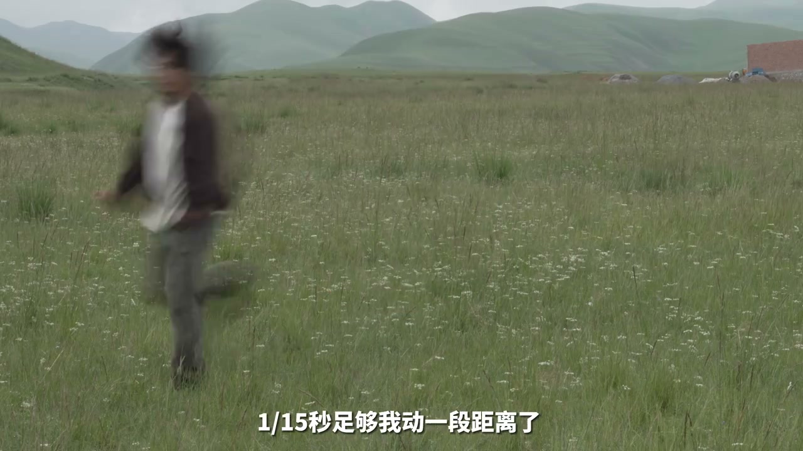
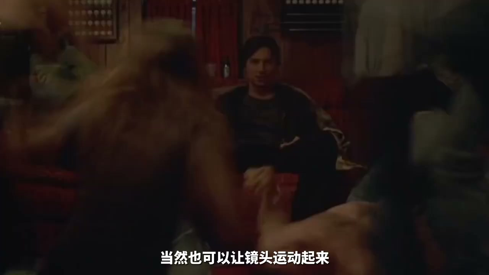

01
中文
场景中运动的部分带有明显的拖影，随之而来的是慌乱和迷离的观感。
EN
Moving parts carry obvious trails, bringing a chaotic, dreamy feel.
表达提示motion trails（拖影）

Scene English · Vlog · 慢门慢动作
Slow Shutter & Slow Motion: Open a New World for Your Vlog
🎧 语音讲解
Slow shutter principle: you've surely seen…
情境慢快门记录运动轨迹产生拖影。
场景中运动的部分带有明显的拖影，随之而来的是慌乱和迷离的观感。
Moving parts carry obvious trails, bringing a chaotic, dreamy feel.
表达提示motion trails（拖影）
快门速度可以理解为相机快门开合一次的时间，在这个时间内相机会记录下画面中物体的运动轨迹。
Shutter speed is the opening time per shot, recording the object's motion trail.
表达提示motion trail（运动轨迹）
15分之一秒足够动一段距离了，所以画面里能看到美妙的拖影。
1/15s is enough to travel a distance, so you see a lovely trail.
表达提示lovely trail（美妙拖影）
motion trails（拖影
motion trail（运动轨迹

Static-subject play: when the shutter deno…
情境三脚架固定，主体静止，人流拖影。
当快门速度的分母小于拍摄帧率时，就会产生像电影中那样的拖影和抽帧的效果。
When the shutter denominator is below the frame rate, you get trails and stutter.
表达提示below frame rate（低于帧率）
让需要被看清的物体保持相对静止，比如架好三脚架，然后站在人流之中。
Keep the subject still—set up a tripod and stand in the crowd.
表达提示tripod still（三脚架静止）
如果你的Vlog需要展现孤独感，这样的画面会非常实用。
If your vlog needs loneliness, such shots are very practical.
表达提示show loneliness（展现孤独）
below frame rate（低于帧率
tripod still（三脚架静止

Camera-motion play: of course, you can als…
情境镜头绕主体旋转，配合参考线固定主体。
也可以让镜头运动起来，比如侧着跟或者绕着人旋转。
You can also move the lens—track from the side or orbit around a person.
表达提示orbit the subject（绕着旋转）
借助相机的参考线，让主体保持在画面的固定位置。
Use the grid lines to keep the subject at a fixed spot.
表达提示grid lines（参考线）
当你想在Vlog里营造一些怪力怪气的感觉，都可以试试把快门速度调慢。
For a weird, otherworldly vibe, try lowering the shutter speed.
表达提示weird vibe（怪力怪气）
orbit the subject（绕着旋转
grid lines（参考线
Slow-motion principle: also slow-related, …
情境高帧率低帧率播放，细节捕捉。
这种手法说白了就是高帧数画面用低帧数播放。
It's high-frame-rate footage played back at a low frame rate.
表达提示high fps, low playback（高拍低放）
30帧拍60帧，就可以得到0.5倍的慢动作，120帧就是0.25倍。
Shoot 60fps in a 30fps vlog for 0.5x; 120fps gives 0.25x.
表达提示0.5x and 0.25x
体现一些细微的动作会是一种不错的选择。
Showing subtle movements is a nice choice.
表达提示subtle movements（细微动作）
0.5x and 0.25x
subtle movements（细微动作

Slow motion amplifies emotion: slow motion…
情境慢动作放大情绪，像一句台词的回响。
慢动作又有放大情绪、修饰演技的作用。
Slow motion magnifies emotion and polishes acting.
表达提示magnify emotion（放大情绪）
现在这段画面用常速播放就会显得我很蠢。
This segment at normal speed would make me look silly.
表达提示normal speed silly（常速显蠢）
生命不过是一次闪电。
Life is but a lightning flash.
表达提示a lightning flash（一次闪电）
magnify emotion（放大情绪
normal speed silly（常速显蠢
说慢门原理
说静态主体
说镜头运动
说慢动作原理
说情绪放大
情绪画面要调慢快门。
三脚架让主体保持静止。
环绕拍摄借助参考线固定。
慢动作要高拍低放。
慢动作拍细微动作更有戏。